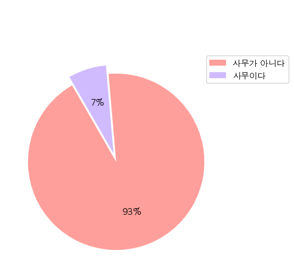
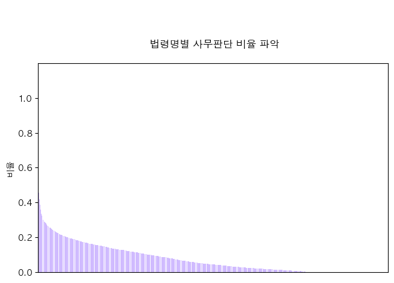
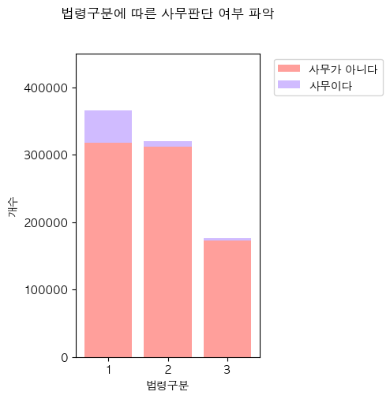

import pandas as pd
import numpy as np
import matplotlib.pyplot as plt
import matplotlib.font_manager as fm
from matplotlib import rc
import seaborn as sns
%matplotlib inline1. 사무판단 개수 파악
df = pd.read_csv('/Users/limdonggeon/Desktop/KPMG/Work/Law/data/BaseTable_2.csv')/var/folders/fs/zfypqyv96hs22x794hfx0ycm0000gn/T/ipykernel_13078/786891916.py:1: DtypeWarning: Columns (4,5,13,16,17,18,19,24) have mixed types. Specify dtype option on import or set low_memory=False.
df = pd.read_csv('/Users/limdonggeon/Desktop/KPMG/Work/Law/data/BaseTable_2.csv')df.info()<class 'pandas.core.frame.DataFrame'>
RangeIndex: 861624 entries, 0 to 861623
Data columns (total 25 columns):
# Column Non-Null Count Dtype
--- ------ -------------- -----
0 소관부처명 861624 non-null object
1 법령명 861624 non-null object
2 법령구분 861624 non-null int64
3 조번호 861043 non-null object
4 항번호 666511 non-null object
5 호번호 504874 non-null object
6 조문제목 861624 non-null object
7 조문 861624 non-null object
8 사무판단 861624 non-null int64
9 사무판단근거 700810 non-null object
10 사무명 60068 non-null object
11 수행주체 60069 non-null object
12 사무유형 60026 non-null object
13 위임사무판단 761044 non-null object
14 위임근거규정 5292 non-null object
15 수임기관 4398 non-null object
16 특행기관 93064 non-null object
17 재위임사무판단 702426 non-null object
18 재위임근거규정 53 non-null object
19 재수임기관 13 non-null object
20 위탁사무판단 758608 non-null float64
21 위탁근거규정 3970 non-null object
22 수탁기관 3943 non-null object
23 사무유형(소분류) 60026 non-null object
24 기타 3 non-null object
dtypes: float64(1), int64(2), object(22)
memory usage: 164.3+ MBdf['사무판단'].unique()array([0, 1, 2])# 개수 파악
N = len(df)
ratio_0 = (len(df[df['사무판단'] == 0]))/N *100
ratio_1 = (len(df[df['사무판단'] == 1]))/N *100
print(ratio_0,ratio_1)93.03338811360872 6.966263706674837rc('font', family='AppleGothic')
plt.rcParams['axes.unicode_minus'] = False
ratio = [ratio_0, ratio_1]
labels = [0,1]
explode = [0, 0.10]
#define Seaborn color palette to use
colors = sns.color_palette('pastel')[3:5]
#create pie chart
plt.pie(ratio, colors = colors, autopct='%.0f%%', startangle= 120, explode=explode)
plt.legend(['사무가 아니다', '사무이다'], bbox_to_anchor=(1.3, 1))
plt.title('\n\n\n')
plt.show()
2. 소관부처명에 따른 사무판단
df['소관부처명'].unique()array(['개인정보보호위원회', '경찰청,대검찰청,법무부', '경찰청,해양경찰청', '경찰청',
'경찰청,교육부,국토교통부,보건복지부', '경찰청,법무부', '고용노동부', '고용노동부,여성가족부',
'공정거래위원회', '과학기술정보통신부', '과학기술정보통신부,방송통신위원회', '과학기술정보통신부,법무부',
'과학기술정보통신부, 방송통신위원회', '교육부', '고용노동부,교육부', '교육부,행정안전부',
'교육부,문화체육관광부', '과학기술정보통신부,교육부', '국가보훈처', '국가안보실', '국가정보원',
'국가정보원,국무조정실', '국무조정실', '국무조정실,해양수산부', '가습기살균제사건과4.16세월호참사특별조사위원회',
'국무총리비서실', '국민권익위원회', '국방부', '국방부,병무청', '국방부,행정안전부',
'5.18민주화운동진상규명조사위원회', '국방부,방위사업청', '국방부,법무부', '국방부,방위사업청,산업통상자원부',
'교육부,국방부', '국토교통부', '국토교통부,산업통상자원부', '환경부', '국토교통부,해양수산부',
'국토교통부,환경부', '국토교통부,법무부', '국토교통부,행정중심복합도시건설청', '금융위원회',
'금융위원회,법무부', '기상청', '기획재정부', '기획재정부,행정안전부', '농림축산식품부',
'농림축산식품부,해양수산부', '농림축산식품부,농촌진흥청', '농림축산식품부,식품의약품안전처,해양수산부',
'농촌진흥청', '대통령경호처', '대통령실', '문화재청', '문화체육관광부', '방송통신위원회', '법무부',
'고용노동부,공정거래위원회,국토교통부,법무부,산업통상자원부,환경부', '행정안전부', '보건복지부', '법제처',
'보건복지부,질병관리청', '보건복지부,식품의약품안전처', '국토교통부,보건복지부',
'과학기술정보통신부,보건복지부,산업통상자원부', '경찰청,보건복지부', '질병관리청', '산림청', '산림청,환경부',
'산업통상자원부', '기획재정부,산업통상자원부', '국방부,산업통상자원부', '고용노동부,산업통상자원부',
'산업통상자원부,외교부', '소방청', '식품의약품안전처', '여성가족부', '여권과', '재외동포과',
'영사서비스과', '혁신행정담당관실', '외교사절담당관실', '국제법규과', '개발협력과', '다자협력인도지원과',
'유엔과', '개발전략과', '인사제도팀', '연구행정과', '공공외교총괄과', '재외공관담당관실',
'운영지원담당관실', '의전행사담당관실', '문화교류협력과', '외교사료팀', '한아프리카재단', '재외국민보호과',
'원자력안전위원회', '인사혁신처', '기획재정부,조달청', '조달청', '중소벤처기업부', '통계청',
'기획재정부,통계청', '통일부', '특허청', '해양경찰청', '법무부,해양경찰청', '국민안전처,해양경찰청',
'해양수산부', '산업통상자원부,해양수산부', '친일반민족행위진상규명위원회', '진실화해를위한과거사정리위원회',
'인사혁신처,행정안전부', '법제처,행정안전부', '소방청,해양경찰청,행정안전부', '국토교통부,행정안전부',
'해양수산부,환경부', '국무조정실,환경부', '국무조정실,기획재정부,환경부', '문화재청,환경부'],
dtype=object)def law_work_count(i):
a = len(df.loc[(df['소관부처명']==i) & (df['사무판단']==0), ])
b = len(df.loc[(df['소관부처명']==i) & (df['사무판단']==1), ])
#print(f"소관부처 {i}일때 ========")
#print(f"사무x: {a}")
#print(f"사무O: {b}")
result = [b, a, i]
return resultresult = []
for i in df['소관부처명'].unique():
result.append(law_work_count(i))result.sort(key=lambda x:x[0], reverse = True)result[:10][[5496, 51473, '환경부'],
[5266, 108493, '국토교통부'],
[4684, 50751, '행정안전부'],
[3922, 45776, '산업통상자원부'],
[3730, 42779, '보건복지부'],
[3643, 54249, '해양수산부'],
[2933, 47704, '기획재정부'],
[2342, 23501, '농림축산식품부'],
[2331, 25350, '교육부'],
[1946, 21453, '과학기술정보통신부']]task_num_by_department = []
department = []
for i in range(len(result)):
task_num_by_department.append(result[i][0])
department.append(result[i][2])fig, ax = plt.subplots(figsize=(5, 3))
colors = sns.color_palette('pastel')[4]
#plt.scatter(range(len(result)),task_num_by_department,marker = '.')
plt.bar(range(len(task_num_by_department)), task_num_by_department, color=colors)
plt.title('\n\n\n 소관부처별 사무판단 개수 파악\n')
plt.ylabel('개수')
plt.xlim([-1,len(task_num_by_department)])
plt.xticks([])
plt.ylim([0,6000]);
plt.yticks(np.arange(0, 6000, step=1000));
result[:10][[5496, 51473, '환경부'],
[5266, 108493, '국토교통부'],
[4684, 50751, '행정안전부'],
[3922, 45776, '산업통상자원부'],
[3730, 42779, '보건복지부'],
[3643, 54249, '해양수산부'],
[2933, 47704, '기획재정부'],
[2342, 23501, '농림축산식품부'],
[2331, 25350, '교육부'],
[1946, 21453, '과학기술정보통신부']]3. 법령에 따른 사무판단
df['법령구분'].unique()array([1, 2, 3])df['사무판단'].unique()array([0, 1, 2])groups = ['1', '2', '3']
values1 = [len(df.loc[(df['법령구분']==1) & (df['사무판단']==0), ]), len(df.loc[(df['법령구분']==2) & (df['사무판단']==0), ]), len(df.loc[(df['법령구분']==3) & (df['사무판단']==0), ])]
values2 = [len(df.loc[(df['법령구분']==1) & (df['사무판단']==1), ]), len(df.loc[(df['법령구분']==2) & (df['사무판단']==1), ]), len(df.loc[(df['법령구분']==3) & (df['사무판단']==1), ])]fig, ax = plt.subplots(figsize=(3, 5))
colors = sns.color_palette('pastel')[3:5]
# stack bar 로 구성
ax.bar(groups, values1, color = colors[0])
ax.bar(groups, values2, bottom = values1, color = colors[1])
plt.title('법령구분에 따른 사무판단 여부 파악\n\n')
plt.xlabel('법령구분')
plt.ylabel('개수')
plt.legend(['사무가 아니다', '사무이다'], bbox_to_anchor=(1.7, 1))
plt.ylim([0,450000])
plt.yticks(np.arange(0, 500000, step=100000))
plt.show()
# def law_work_count(i):
# a = len(df.loc[(df['법령구분']==i) & (df['사무판단']==0), ])
# b = len(df.loc[(df['법령구분']==i) & (df['사무판단']==1), ])
# c = len(df.loc[(df['법령구분']==i) & (df['사무판단']==2), ])
# print(f"법령 구분 {i}일때 ========")
# print(f"사무x: {a}")
# print(f"사무O: {b}")
# print(f"애매: {c}")
# result = [a, b, c]
# return result# result = []
# for i in range(1, 4):
# result.append(law_work_count(i))
# result# # 법령 구분에 따른 사무판단 비율 계산
# ratio_df = df.groupby(['법령구분', '사무판단']).size().unstack().T
# ratio_df = ratio_df.div(ratio_df.sum(axis=1), axis=0)
# # 비율을 시각화
# ratio_df.T.plot(kind='bar', stacked=True)
# plt.title('법령구분에 따른 사무판단 비율')
# plt.xlabel('법령구분')
# plt.ylabel('Administrative Decision')
# plt.show()